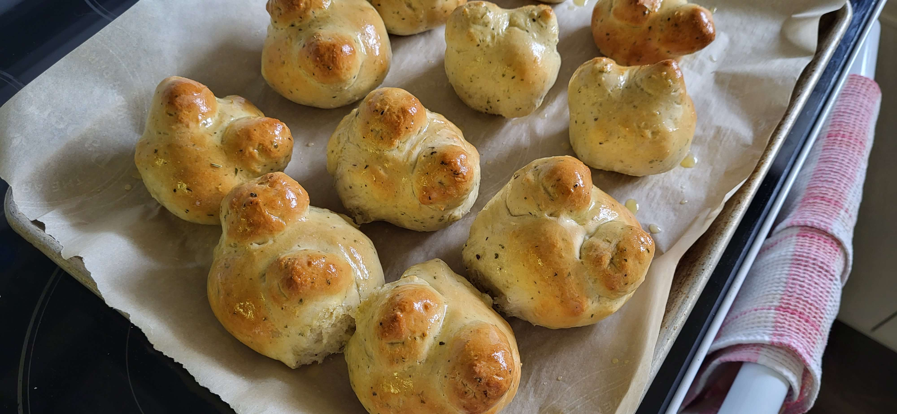

Frogbuns

Frogbuns were a food item I made for Frogsong, and quickly realized I wanted to make real. They ended up turning out SUPER tasty! They're soft and buttery and full of tasty herbs, and would make a great little snack or side to a meal!
Makes 12 frogbuns
Ingredients
- 1 cup of water
- 2 tablespoons of melted butter
- 1 large egg
- 2 tablespoons of honey
- 1 tablespoon of active-dry yeast
- 1 teaspoon of salt
- ½ teaspoon of dried oregano
- ½ teaspoon of dried basil
- ½ teaspoon of dried rosemary
- 1 teaspoon dried parsley
- 3 to 4 cups of bread flour, as needed
- Additional butter, melted
How to make 'em
- In a saucepan over medium-low heat, stir together water, melted butter, and honey until combined. Heat until it reaches 110 - 115° F. If it gets too hot, it will kill the yeast!
- Pour the liquid into a large bowl. Sprinkle yeast evenly on top, and give it a small stir with a fork to combine. Let the yeast sit for 5 to 10 minutes until it is foamy.
- Add the egg into the mixture and stir until combined.
- Add the salt, oregano, basil, rosemary, and parsley.
- Slowly add 3 cups of flour. Stir until combined. Place the dough onto a floured surface and knead for 5 to 7 minutes until smooth, adding extra flour if the dough is too sticky.
- Form the dough into a ball and transfer to a greased bowl. Cover the bowl and let the yeast rise for 30 to 90 minutes, until the dough has roughly doubled in size.
- Uncover dough, gently punch down, and divide into 12 rounds.
- Remove two smaller balls from each round, and add to the top. Pinch and push down the dough around the seams of the balls to smooth out. If you wet your fingers slightly before placing the balls on top, they'll stick more easily! You'll probably have to reshape them a bit afterwards to make them look nice again. Make the "bodies" flatter than you'd think - if they get too tall while rising in the oven, they'll start to lean and fall over, making very sad looking frogs!
- Using a toothpick, carve a horizontal line on each ball to form the eyes using a slight sawing motion.
- Place one by one onto a parchment lined baking sheet about an inch apart and let rise for another 30 minutes. If you're using quick-rising yeast, you can skip this last rising. Meanwhile, preheat the oven to 400° F.
- Bake buns for 15-20 minutes, or until light golden brown on top.
- Brush the tops of the buns with the additional melted butter, and let cool.
- Once they're cool, enjoy those tasty things!!